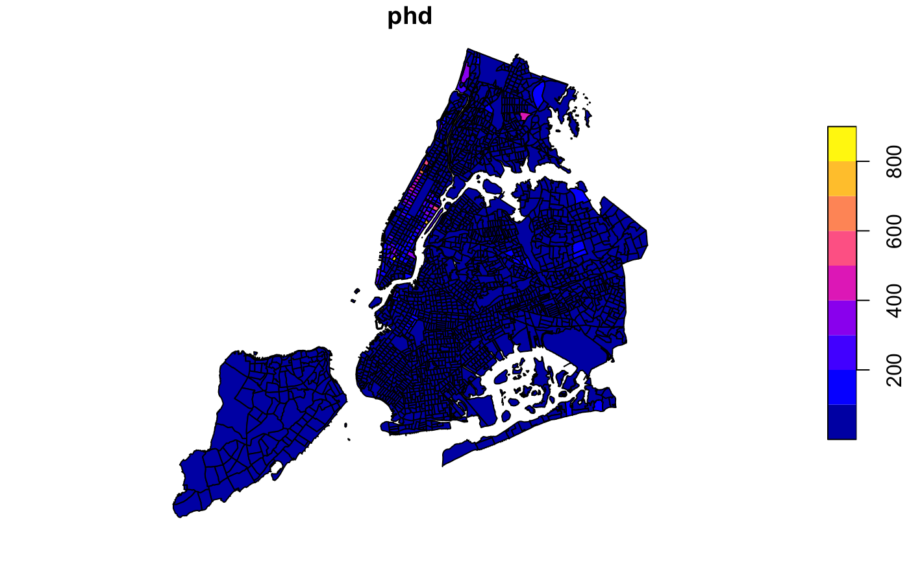

Block-level New York City information about education and demographic characteristics (2000). Geographic units: 2010 Census blocks.
nyceducation
An sf data frame with 2216 rows, 57 variables, and a geometry column:
unique ID
pct of population age 16-19 that has dropped out of high school
pct of the population that is non-white
pct of population over age 25 that dropped out of high school
pct of population over age 25 that obtained at least a bachelor’s degree
pct of the population that is Asian
pct of the population that is black
pct of the population that is white
census tract label
borough code, 1-5 (see census data)
borough name
census tract coding, see census data
neighborhood tabulation area code
neighborhood tabulation area name
public use microarea code
Length of polygon border
Area of polygon
number of nonprofits
mean income
population age 16-19, count
high school dropouts, age 16-19, count
population enrolled in high school, age 16-19, count
pct of all students enrolled in private school
pct of all students enrolled in public school
population over 3, count
population over 3, not enrolled in school, count
population over 3, enrolled in school, count
enrolled in public school, count
enrolled in public pre-k, count
enrolled in public k-8, count
enrolled in public high school, count
enrolled in public college, count
enrolled in private school, count
enrolled in private pre-k, count
enrolled in private k-8, count
enrolled in private high school, count
enrolled in private college, count
population over 25, count
population over 25, less than high school degree, count
population over 25, high school degree, count
population over 25, some college, count
population over 25, bachelor’s degree, count
population over 25, master’s degree, count
population over 25, professional degree, count
population over 25, phd, count
total population, white, count
total population, black, count
total population, asian, count
total population under 18, count
gender parity, 1=parity, higher = more males, lower = more females
male population, count
female population, count
number of schools, count
population density, people per square mile
population, count
Source for school locations: Open Data New York (https://data.cityofnewyork.us/Education/School-Point-Locations/jfju-ynrr). Demographics source: 2000 Census.
Sf object, Projection 2203. NAD83 / New York Long Island (ftUS)
if (requireNamespace("sf", quietly = TRUE)) { library(sf) data(nyceducation) plot(nyceducation["phd"]) }